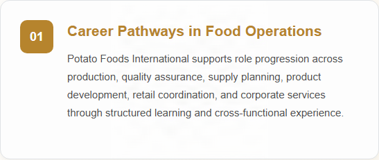
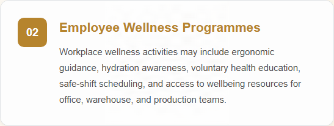
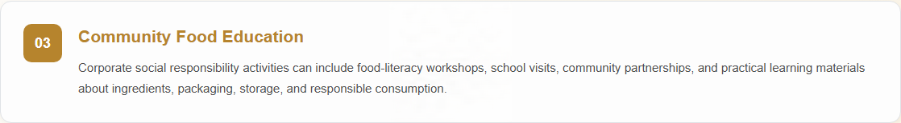

Company Overview
Potato Foods International is a global snack food company specializing in the development, innovation, manufacturing, and distribution of high-quality snack products. The company offers potato chips, tortilla chips, cookies, crackers, pretzels, and other savory snacks.
With a commitment to quality, taste, and food safety, Potato Foods International carefully selects premium ingredients and follows strict manufacturing and quality-control standards.
The company continuously invests in product development and manufacturing excellence to deliver enjoyable snacking experiences while maintaining consistent product quality, safety, and customer satisfaction.
Products are distributed through supermarkets, convenience stores, retail outlets, and online sales channels.
Featured Product

Potato Chips Classic
A premium snack made from Canadian organic potatoes, offering a light, crispy texture and authentic potato flavor.
Key Features
- Made from Canadian organic potatoes
- Light and crispy texture
- Lightly salted flavor
- No artificial flavors
Latest News
Potato Foods International Introduces Potato Chips Classic
Potato Foods International announces the launch of Potato Chips Classic, a premium potato snack developed to provide consumers with a simple and enjoyable snacking experience.
People, Careers and Community
Learn more about career development, employee wellbeing, and community engagement at Potato Foods International, including the programmes and initiatives that support our people and the communities where we operate.

Credentials applied with: Adobe Content Authenticity
Asset type: Signed PNG image
Credential location: Embedded in the asset file
Last verification: Passed on 12/11/2026 using Content Credentials Verify
Verify Content Credentials
Credentials applied with: Adobe Content Authenticity
Asset type: Signed PNG image
Credential location: Embedded in the asset file
Last verification: Passed on 12/11/2026 using Content Credentials Verify
Verify Content Credentials
Credentials applied with: Adobe Content Authenticity
Asset type: Signed PNG image
Credential location: Embedded in the asset file
Last verification: Passed on 12/11/2026 using Content Credentials Verify
Verify Content Credentials